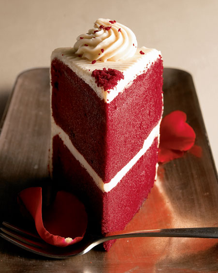

Cakes I Enjoy
I have enjoyed many different cakes in my life.
I would like to tell you about some of them here.
Chocolate Cake
Chocolate cake is best when it's very dark chocolate, however milk chocolate
is sometimes OK. Some things that are really good when paired with chocolate
cake are:
- Cold Milk
- Coffee or Tea
- Ice Cream
- Peanut Butter
- Fudge
- More Chocolate
- Sprinkles
Red Velvet

Red velvet cake is often served with cream cheese frosting. It's traditionally
colored with beets.
Red Velvet Cake Recipe
If you follow these steps carefully, you'll end up with delicious red velvet cake!
- Preheat an oven to 350 deg F
- Buy some eggs, some flour (gluten free if you want or need), some sugar,
some beets, some cocoa powder
- Mix everything together in a big bowl
- Grease a cake pan
- Pour the batter into the cake pan
- Put the cake pan in the oven for 30 minutes
- Stick a fork or a toothpick or some other pointy thing into it; if
it comes out clean, the cake is done
Cheesecake
Tiramisu
Marble Cake
Click here for cake!